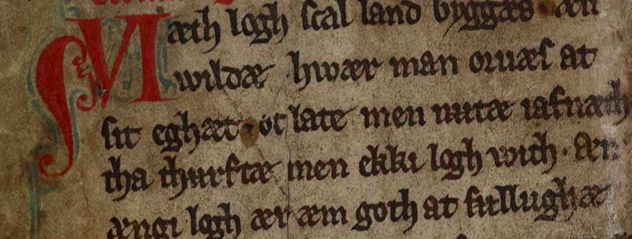
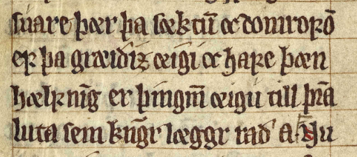
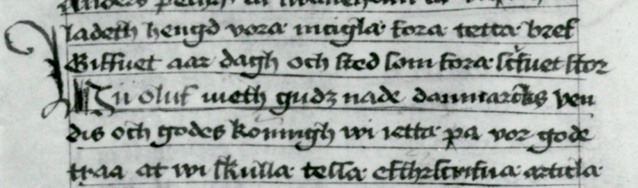
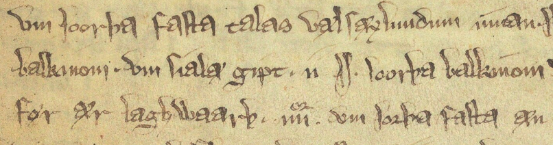
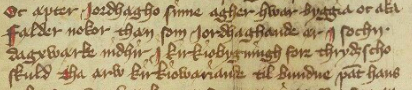
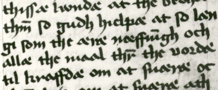
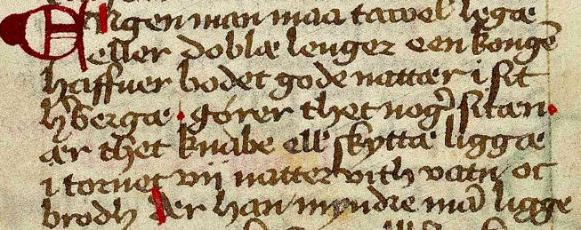
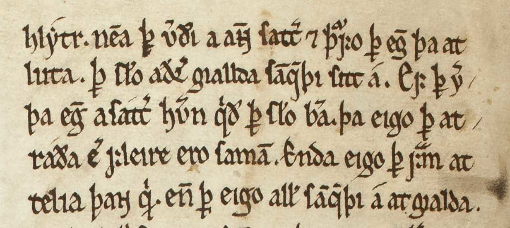

NordicLaw Database is a searchable catalogue of Icelandic, Norwegian, Danish, and Swedish vernacular law manuscripts and fragments from the Nordic Middle Ages (ca. 1100–1600).
Main Editor: Stefan Drechsler (University of Bergen; contact). Editors: Tonje Waldersnes (NTNU Trondheim), Már Jónsson (University of Iceland), Anne Mette Hansen (University of Copenhagen), Seán Vrieland (University of Copenhagen), Anna Catharina Horn (University of Oslo).
Manuscript
Text Details
List of Abbreviations
Loading…
Bibliography
Loading…
Readers Guide
This guide explains the fields of the database. Abbreviations used in the fields are expanded in the List of Abbreviations.
As stated in the current depository's databases and/or catalogues. If the manuscript is available in digital form, an IIIF icon next to the shelfmark opens its images in a viewer, where further manuscripts can be added for comparison.
Related Shelfmarks
Older or alternative shelfmarks.
Language
The main language the manuscript is written in. This refers to the modern languages Icelandic, Norwegian, Swedish and Danish.
Name
The name of the manuscript, if it has one.
Object
The condition of the object: Codex or Fragment.
Size
Fol., 4to, 8vo, 12mo or Unknown.
Content
Production Unit
Counted in Roman numerals and based on Kwakkel 2002: a set of quires that form a material unity, made together during a single planning phase.
Leaves/Pages
References to folia (f. = a single folium; ff. = several folia).
Main text
The main text, with subsections identified in the Minor text field if needed.
Minor text
With an extended title if no standardised title is available.
The shortened names of main and minor texts, and of related chapters, are initially taken from LMNL and/or ONP. Where these lists are not sufficient, further abbreviations have been added. Some names are specified further where needed, e.g. to separate Kvennagiftingar, Erfðatal and Framfærslubálkr in Jónsbók, and Kvennagiftingar and Erfðatal in Landslǫg. The shortened main and minor legal texts are part of the List of Abbreviations. Law amendments (réttarbætr) and statutes (statutt) are listed by the king or (arch)bishop who issued them, the date they were introduced and, if needed, the place of use.
Physical Description
Codicology
Gatherings
The codicological structure of the manuscript. A Roman numeral gives the quire and is separated from the content information by a colon (:). It is followed by the total number of leaves in Arabic numerals (#). Inside the brackets follow the number of bifolia and (+) the number of single folios, and, after a semicolon (;), which folia the quire contains.
Example: quire three consists of eight leaves. Three of them are bifolia, while the remaining two are single leaves. These eight leaves are numbered as folia 23 to 30. This looks as follows: III:8 (3b, 2f; ff. 23-30).
If information on the quire structure is available, a collation diagram made with the VisColl editor is added. It can be downloaded as PDF, SVG or PNG.
Full size
The size of the manuscript or fragment including the cover, in millimetres (mm).
Leaf size
The size of the individual leaves, in millimetres (mm).
Catch Words and Gatherings
Catchwords and/or custodes.
Pricking
Whether pricking is used and/or visible.
Material
Parchment, paper, parchment/paper, or other.
Mise-en-page
Ruling
Ink, Dry or Unknown.
Columns
1, 2, 3, Unknown, Other or Various.
Lines
The number of lines the text is written in.
Script
Based on its visual appearance (in facsimile), the script is categorised according to the expanded Lieftinck system, as described by Derolez 2003. Note that the script is not divided into the subcategories Formalis, Libraria and Currens. For more visual samples of Gothic script, see the project Medieval Manuscripts in Flemish Collections (MMFC; 2019–2023, 2024–2028), where facsimiles and descriptions are found: Gothic script in pictures.
The script types of the NordicLaw Database are as follows:
Textualis: two-compartment a, long f and s on the baseline, no loops on ascenders.

AM 455 12mo, f. 4v, ca. 1300.Septentrionalis: two-compartment a, long s on the baseline, no loops, and insular f.

AM 56 4to, f. 4va, ca. 1300.Semitextualis: like Textualis, but with single-compartment a.

AM 26 8vo, f. 17r, 1350–1400.Cursiva Antiquior: two-compartment a, long f and s below the baseline, loops on ascenders.

UUB B 45, f. 78v, 1325–1375.Cursiva Recentior: like Cursiva Antiquior, but with single-compartment a.

UUB B 25, f. 2v, 1450–1500.Hybrida: single-compartment a, long f and s below the baseline, no loops.

AM 447 12mo, f. 50r, 1475–1500.Semihybrida: like Hybrida, but with optional loops.

AM 442 12mo, f. 91v, 1485–1500.Protogothic: script with tendencies towards biting and kissing, mainly bb, pp (and sometimes oc), but which does not fully follow Meyer's rules for Gothic script.

GKS 1157 fol., f. 15vb, ca. 1250.
Gothic
Script following Meyer's rules for Gothic script.
Cursive
Quick and slanted script for speedy notation, often with connections between letters.
Younger Cursive
A Cursiva Recentior, but with full connection between letters, which makes them difficult to distinguish from one another.
Rubric
Whether rubrics are present or not.
Provenance
Scribe
a, b, c, etc., if the name of the scribe is unknown.
A short description of the style and size of the initials, using the vocabulary of the Menota handbook 3.0, ch. 7, written by Beeke Stegmann and Friederike Richter.
Size of Initials
Large, Medium or Small, or two or three of these.
Iconography
A description of iconographic and/or text-related book painting, and of its placement in the legal texts of the manuscript or fragment.
Place
The placement of the book painting in the manuscript: throughout, none, or in sections.
HR (handrit.is);
ONP (Dictionary of Old Norse Prose);
DKB (Det Kongelige Bibliotek, Copenhagen);
MS (manuscripta.se);
AV (Alvin);
FyV (Fylkesarkivet i Vestland, Bergen);
NorS (Sprogsamlinger, University of Copenhagen).